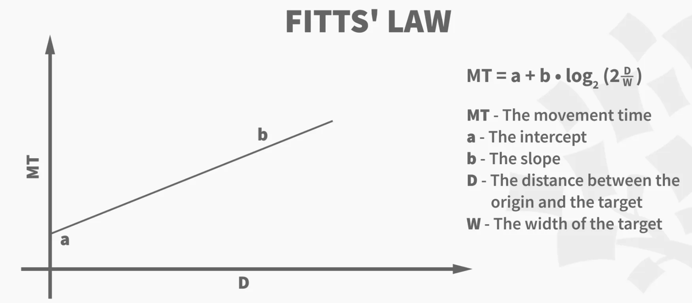

Description of the project
1. The 2 Experiments given below is used to demonstrate the relation between the
Movement Time and the Distance bw the objects
and the Width of the object
respectively
2. Each ordered click in any frame has a defined distance between the two clicks.
3. The distance between the avg 2 clicks is different for the 2 frames in any Experiment.
4. Due to the difference in distances of clicks
we will get non equal Movement Time(MT) for the two frames
,thus depicting an application of Fitt's Law.,

To find out the relation between The Movement Time and Distance of two objects.
To do: Follow the order and click on the circles of each of the Frame
The movement time between each of the clicks will be calculated and displayed
Constants
1) The a and b remain same for both frames and are neglected
2) The radius of the circle's : 25 px : 6.6 millimeter
W (Width of the target) : 13.2 millimeter
W will remain same for both the Frames and circles. W = W1 = W2
Click the red buttons in order with no pause of distraction(to reduce error)
Distance between the two circles (D1) 949-20-20-50px = 859px : 227.2mm
1
2
Click the red buttons in order with no pause of distraction(to reduce error)
Distance between the two circles (D2) 349-20-20-50px = 259px : 68.5mm
1
2
According to Fitt's Law
RHS = a + b*log((2*D) / W) //neglecting a as ~ 0
The ratio of RHS => RHS1 / RHS2 ~ log(2*D1 / W1) / log(2*D2 / W2)
RHS ratio ~ 1.53/1.02 ~ 1.5
The ratio of LHS = MT1 / MT2
LHS ratio =
.
We can conclude that as the LHS ratio ~ RHS ratio, and both > 1
the Movement Time is directly proportional to Distance between the two objects
Thus the Fitt's Law holds correct
To find out the relation between The Movement Time and width of the 2 objects.
To Do: Follow the order and click on the circles of each of the Frame
The movement time between each of the clicks will be calculated and displayed
Constants
1) The a and b remain same for both frames and are neglected
2) The distance between the two circle's : 859px : 227.2 millimeter
D (Distance between the targets) : 227.2 millimeter
D will remain same for both the Frames . D = D1 = D2
Click the red buttons in order with no pause of distraction(to reduce error)
Width of the two circles (W1) = 50px : 13.2mm
1
2
Click the red buttons in order with no pause of distraction(to reduce error)
Width of the two circles (W2) = 150px : 39.6mm
1
2
According to Fitt's Law
RHS = a + b*log((2*D) / W) //neglecting a as ~ 0
The ratio of RHS => RHS1 / RHS2 ~ log( 2*D / W1) / log( 2*D / W2)
RHS ratio ~ 1.53/1.06 ~ 1.44
The ratio of LHS = MT1 / MT2
LHS ratio =
.
We can conclude that as the LHS ratio ~ RHS ratio, and both > 1
the Movement Time is directly proportional to Distance between the two objects
Thus the Fitt's Law holds correct
link to SOURCE CODE(GITHUB)
link to FINAL COURSE PROJECT REPORT
Made by Nischay Khandelwal || 2020A7PS0101P